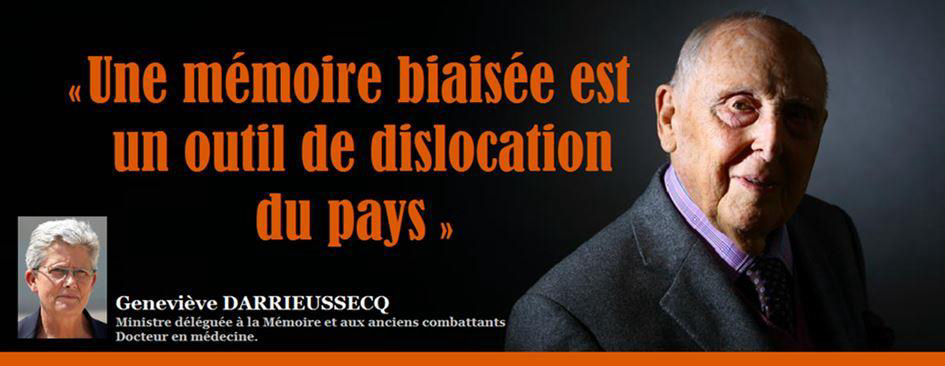
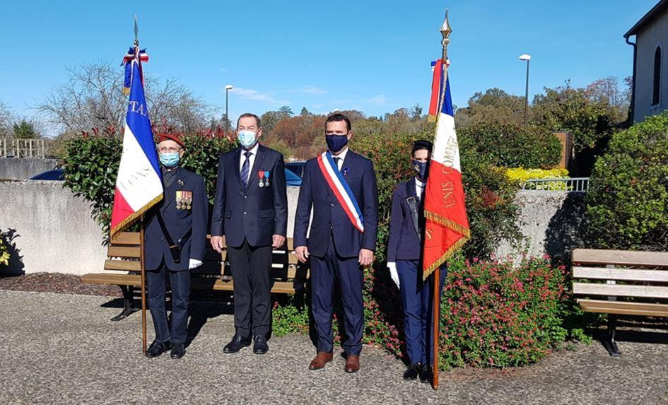
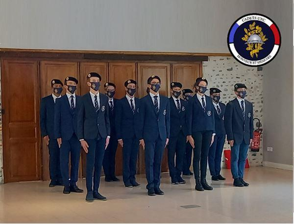
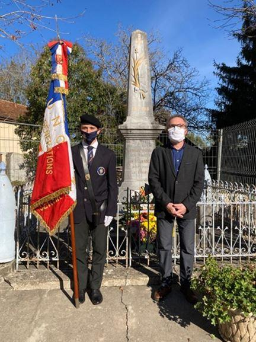

Une mémoire biaisée est un outil de dislocation du pays
par Geneviève DARRIEUSSECQ

La ministre déléguée à la Mémoire et aux Anciens combattants souligne les enjeux du discours mémoriel alors que les derniers grands témoins de la Seconde Guerre mondiale disparaissent
Daniel Cordier, Noëlla Rouget, Maurice Cling… En quelques jours à peine, ces grands témoins des événements marquants du siècle dernier nous ont quittés. Avec eux, et tous ceux qui ont disparu ces derniers mois, ce sont les récits vivants de la Seconde Guerre mondiale, de la Résistance, des déportations et de la Shoah qui disparaissent peu à peu. Leurs témoignages sont pourtant notre héritage, un legs pour les générations futures. Pour que la flamme du souvenir ne s’éteigne jamais et que leurs voix continuent de résonner, c’est à nous désormais de poursuivre le relais.
En 2020, la crise sanitaire a bousculé nos habitudes. Le travail de mémoire et les pratiques commémoratives n’y ont pas échappé. Des cérémonies se sont déroulées sans public, sans ancien combattant, sans jeune, en somme sans une part de leur âme ordinaire. Les moments de partages intergénérationnels et de pédagogie mémorielle qui se tiennent régulièrement dans les écoles se sont raréfiés. Inévitablement, le relais mémoriel, pacte entre chaque génération, a été touché.

Cérémonie du 11 Novembre à Lons (64) Le maire, Nicolas Patriarche entouré du président de l’Amicale des anciens combattants et juste de deux porte-drapeaux dont une jeune cadet de l’UNC, Maire-Léa Priou.
Webséries et directs. Mais à chaque crise, ses opportunités. Comme dans tant d’autres domaines, le virus nous a poussés à nous adapter, plus que cela même, à innover. Ainsi, ces derniers mois, de nouvelles pratiques mémorielles ont vu le jour. Et souvent avec succès ! Des webséries ont été diffusées sur internet. Des cérémonies telles que celles du Vel d’Hiv ou des commémorations de la guerre de 1870 ont été retransmises en direct sur les réseaux sociaux et ont comptabilisé des dizaines de milliers de vues, un record pour des cérémonies non retransmises à la télévision. Cette année, nous avons pensé la transmission différemment, nous avons, en définitive, commémoré autrement. Cette impulsion, nous devons la poursuivre et l’intensifier. Cet élan, nous devons l’accompagner.
On ne peut commémorer, à l’époque des réseaux sociaux et du numérique omniprésent, de la même manière qu’au temps de l’image sépia ou du tout-papier. Je souhaite que, tout en pérennisant les moments autour de nos monuments et nos lieux de mémoire, nous soyons collectivement capables de renouveler les formes de partage, de susciter une curiosité accrue du grand public et de renouveler l’intérêt des jeunes citoyens. Dans cette perspective, le ministère des Armées apporte désormais un soutien direct aux initiatives mémorielles innovantes, portées par des citoyens engagés, des associations, des artistes ou des entreprises. Un appel à projets lancé début novembre leur est directement adressé.
Chaque famille de notre pays, dans son histoire, détient une part de la mémoire nationale. La ferveur du Centenaire de la Grande Guerre nous a montré, il y a deux ans, combien les initiatives des Français pouvaient être un véritable moteur. Nous devons continuer à les encourager.
Nous devons éviter deux maux : l’amnésie qui sape les bases de notre pacte social et l’hypermnésie qui occulte et pousse à la concurrence des mémoires
Le flambeau de la mémoire doit passer dans les mains de notre jeunesse. Nous œuvrons à redessiner le champ de ces dispositifs pour les rendre toujours plus efficaces et les professeurs jouent en cela un rôle clé.
Parce que le flambeau de la transmission est une œuvre collective, notre responsabilité est d’accompagner sans cesse les volontés et les idées. Parce que la flamme du souvenir éclaire les esprits et cimente la cohésion nationale, il s’agit d’une exigence essentielle pour la continuité même de notre République et de nos valeurs. Ainsi, nous devons éviter deux maux : l’amnésie qui sape les bases de notre pacte social et l’hypermnésie qui occulte et pousse à la concurrence des mémoires. Ceux qui haïssent nos valeurs et notre mode de vie ne s’y trompent pas, ils font d’une mémoire biaisée un outil de dislocation du pays.
La transmission de la mémoire est aussi un enjeu d’actualité, celui de la défense de notre modèle républicain. Nos adversaires construisent un discours mémoriel, certes caricatural et faussé, mais appuyé sur les moyens modernes de communication. Ils le font en instrumentalisant les blessures identitaires, les déchirures de la décolonisation, le ressentiment et les peurs eschatologiques, en usant du complotisme et de la paranoïa. Une pensée repliée sur elle-même, appuyée sur un récit mémoriel manipulé et éloigné des complexités de l’Histoire, représente ce que nous devons combattre. Sans renoncement, jamais !
La République ne transigera pas avec ceux qui veulent la fracturer. Elle ne faiblira pas devant l’abdication de la pensée, ce fléau qui pousse à la haine et à la guerre du tous contre tous. Plus que jamais le travail mémoriel doit se renforcer, il doit opposer à la radicalité un discours mémoriel apaisé et rassembleur, pluriel et de vérité.
Il en va de notre responsabilité citoyenne de se saisir du flambeau, de constamment le raviver, de prendre ensemble le relais.
Partager cette page